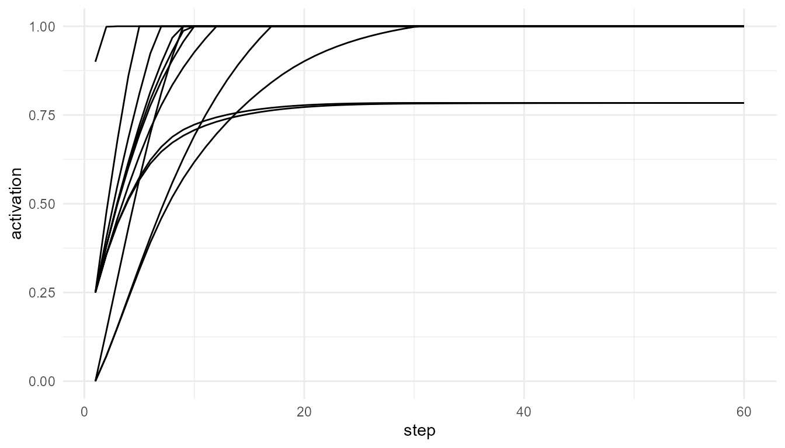

Purpose
This article explains the theoretical role of
broadcast_network(). Broadcast is the idea that selected
information becomes available to multiple parts of a cognitive system
rather than remaining isolated within a local process.
In access-oriented theories of consciousness, information becomes conscious not simply because it is processed, but because it becomes available for wider use: report, reasoning, memory, planning, decision-making, and action (Baars 1988; Dehaene and Naccache 2001; Dehaene 2014).
The guiding question for this chapter is:
What changes when information moves from local processing to system-wide availability?
Broadcast as a theory of availability
Many theories distinguish between local processing and conscious access. A stimulus may be processed by perceptual or cognitive systems without becoming reportable or available for flexible use. For example, information can influence behavior without being explicitly noticed or consciously reported.
Broadcast theories propose that conscious access depends on a change in availability. Information becomes conscious when it is distributed widely enough to influence multiple systems. In this sense, consciousness is not merely the presence of information. It is the availability of information to a broader architecture.
This is why broadcast is important. A signal that remains local may affect only a small part of the system. A broadcast signal can influence many processes at once.
Broadcast and Global Workspace Theory
Broadcast is central to Global Workspace Theory. In Baars’ original framework, the global workspace allows selected information to become available to many specialized processors (Baars 1988, 2002). Later Global Neuronal Workspace models describe conscious access as involving large-scale availability across distributed neural systems (Dehaene and Naccache 2001; Dehaene and Changeux 2011).
In this framework, conscious access involves more than activation. A signal may be active in one local region or subsystem, but it becomes access-conscious only when it is made broadly available.
This distinction is important for
consciousnessModelR:
-
attention_competition_model()models priority and selection. -
simulate_global_workspace()models competition and ignition. -
broadcast_network()models the spread of selected information across a network.
Broadcast therefore represents what happens after a signal is selected or ignited.
Local processing versus broadcast
A useful way to understand broadcast is to compare two situations.
In local processing, information is present but limited. It may affect a small subsystem, but it does not influence the wider system.
In broadcast processing, information spreads to multiple nodes or subsystems. This broader availability allows the information to coordinate behavior, memory, report, and decision-making.
The function broadcast_network() models this distinction
by representing a system as a network of nodes. A source node begins
with activation, and that activation spreads through connections over
time.
Relation to the package
The function broadcast_network() uses a simple network
model. Nodes represent simplified processing units or subsystems.
Connections represent pathways through which activation can spread.
| Theoretical concept | Package representation |
|---|---|
| Cognitive or neural subsystem | Network node |
| Communication pathway | Network connection |
| Initial selected signal | source_node |
| Strength of spread | spread_rate |
| Loss of activation | decay |
| Network architecture | connection_probability |
| Broadcast availability | Activation across multiple nodes |
The model is intentionally abstract. It does not claim that the nodes are real brain regions. Instead, it helps learners explore how architecture influences availability.
Basic simulation
The following example simulates activation spreading through a network of 12 nodes.
net <- broadcast_network(
n_nodes = 12,
steps = 60,
source_node = 1,
connection_probability = 0.25,
spread_rate = 0.25,
decay = 0.10,
seed = 7
)
head(net$time_series)
#> step node activation source_node
#> 1 1 N1 0.90 N1
#> 2 1 N2 0.25 N1
#> 3 1 N3 0.25 N1
#> 4 1 N4 0.00 N1
#> 5 1 N5 0.25 N1
#> 6 1 N6 0.25 N1Network structure
The adjacency matrix shows which nodes are connected. A value of
1 indicates a connection, while a value of 0
indicates no direct connection.
net$adjacency_matrix
#> [,1] [,2] [,3] [,4] [,5] [,6] [,7] [,8] [,9] [,10] [,11] [,12]
#> [1,] 0 1 1 0 1 1 1 1 0 1 0 1
#> [2,] 1 0 0 1 1 0 1 0 0 0 1 1
#> [3,] 1 0 0 1 1 1 0 0 1 0 0 1
#> [4,] 0 1 1 0 1 0 1 1 1 0 0 1
#> [5,] 1 1 1 1 0 0 0 0 0 0 0 1
#> [6,] 1 0 1 0 0 0 0 0 0 0 0 1
#> [7,] 1 1 0 1 0 0 0 1 1 1 1 1
#> [8,] 1 0 0 1 0 0 1 0 1 0 0 1
#> [9,] 0 0 1 1 0 0 1 1 0 0 1 0
#> [10,] 1 0 0 0 0 0 1 0 0 0 0 1
#> [11,] 0 1 0 0 0 0 1 0 1 0 0 1
#> [12,] 1 1 1 1 1 1 1 1 0 1 1 0The structure of this matrix matters because activation can only spread through available connections.
Visualizing spread
plot_consciousness_sim(
net$time_series,
x = "step",
y = "activation",
group = "node"
)
Interpretation of the simulation
The plot shows how activation changes across nodes over time. At the beginning, activation is concentrated at the source node. As time passes, activation spreads to other connected nodes.
In theoretical terms, this illustrates a transition from local availability to broader system availability. The selected signal is no longer restricted to one part of the system. It becomes capable of influencing a larger network.
This is the key idea behind broadcast models of conscious access.
Connectivity experiment
Network architecture strongly affects broadcast. A sparse network may restrict the spread of information. A dense network may allow information to become broadly available more quickly.
sparse <- broadcast_network(
connection_probability = 0.10,
seed = 7
)
dense <- broadcast_network(
connection_probability = 0.60,
seed = 7
)
mean(sparse$adjacency_matrix)
#> [1] 0.16
mean(dense$adjacency_matrix)
#> [1] 0.74Interpreting connectivity
The mean of the adjacency matrix gives a simple measure of network density. Higher values indicate more connections.
A dense network makes broadcast easier because activation has more possible routes. A sparse network limits broadcast because fewer pathways are available.
In consciousness theory, this illustrates why architecture matters. The same signal may remain local in one system but become widely available in another system, depending on how the system is organized.
Spread rate and decay
Two additional parameters are important: spread_rate and
decay.
The spread_rate controls how strongly activation moves
from one node to another. The decay parameter controls how
quickly activation fades.
slow_spread <- broadcast_network(
spread_rate = 0.10,
decay = 0.10,
seed = 7
)
fast_spread <- broadcast_network(
spread_rate = 0.50,
decay = 0.10,
seed = 7
)
high_decay <- broadcast_network(
spread_rate = 0.25,
decay = 0.40,
seed = 7
)
head(slow_spread$time_series)
#> step node activation source_node
#> 1 1 N1 0.9 N1
#> 2 1 N2 0.0 N1
#> 3 1 N3 0.0 N1
#> 4 1 N4 0.0 N1
#> 5 1 N5 0.1 N1
#> 6 1 N6 0.1 N1
head(fast_spread$time_series)
#> step node activation source_node
#> 1 1 N1 0.9 N1
#> 2 1 N2 0.0 N1
#> 3 1 N3 0.0 N1
#> 4 1 N4 0.0 N1
#> 5 1 N5 0.5 N1
#> 6 1 N6 0.5 N1
head(high_decay$time_series)
#> step node activation source_node
#> 1 1 N1 0.60 N1
#> 2 1 N2 0.00 N1
#> 3 1 N3 0.00 N1
#> 4 1 N4 0.00 N1
#> 5 1 N5 0.25 N1
#> 6 1 N6 0.25 N1Interpretation of spread and decay
A higher spread rate allows activation to move more quickly through the network. Higher decay causes activation to disappear more quickly.
These parameters can be interpreted conceptually:
- high spread rate: efficient system-wide availability;
- low spread rate: limited or slow communication;
- high decay: unstable or short-lived availability;
- low decay: more persistent activation.
This helps students see that broadcast is not only about whether connections exist. It also depends on how strongly and how persistently information moves through the system.
Broadcast and reportability
Broadcast is often linked to reportability. If information is globally available, it may be more likely to guide verbal report, action, memory, or planning. However, reportability should not be confused with consciousness itself.
Some theories treat reportability as a useful marker of conscious access. Others argue that report-based methods may miss forms of experience that are not verbally reported. This debate is one reason broadcast models remain important but contested.
The package avoids taking a final position on this debate. Instead, it models broadcast as one theoretically important condition for access-like processing.
Broadcast versus recurrent processing
Not all theories agree that global broadcast is necessary for consciousness. For example, recurrent processing theories emphasize local recurrent loops as central to conscious perception, sometimes arguing that global report or broadcast may reflect later cognitive access rather than consciousness itself (Lamme 2006).
This disagreement is useful pedagogically. It shows that broadcast is one theoretical approach, not a settled definition of consciousness.
In consciousnessModelR, broadcast_network()
therefore represents a specific theoretical commitment: the idea that
availability across a wider system matters for conscious access.
Relation to other functions
broadcast_network() fits into a broader modeling
sequence.
| Function | Role in the sequence |
|---|---|
attention_competition_model() |
Selects or prioritizes a signal |
simulate_global_workspace() |
Models competition and possible ignition |
broadcast_network() |
Models system-wide spread after selection |
consciousness_threshold() |
Classifies activation relative to a threshold |
plot_consciousness_sim() |
Visualizes activation over time |
Together, these functions represent different aspects of access-oriented theories. Selection determines what may enter the system. Broadcast determines how widely it becomes available.
What the model captures
The model captures several important theoretical ideas:
- information may remain local or become broadly available;
- architecture affects access;
- connectivity shapes the spread of activation;
- broadcast can be gradual and dynamic;
- availability depends on both network structure and signal persistence.
These features make the function useful for explaining why broadcast is a central concept in global workspace approaches.
What the model does not capture
The function is intentionally simplified. It does not model:
- biological neural networks;
- synaptic dynamics;
- cortical anatomy;
- thalamocortical loops;
- working memory;
- report behavior;
- subjective experience.
It also does not show that broadcast is sufficient for consciousness. It shows only how information can become broadly available in a simplified network.
Educational use
This simulation can support classroom discussion by encouraging students to ask:
- How does network density affect availability?
- Can information be processed without being broadcast?
- Is broadcast necessary for conscious access?
- Is broadcast sufficient for consciousness?
- How does this model differ from integration-based theories?
- What would be needed to make the model more realistic?
These questions help students understand broadcast as a theoretical concept rather than as a final explanation.
Key takeaway
Broadcast theories emphasize availability. A signal becomes access-like when it spreads beyond local processing and becomes available to a wider system.
broadcast_network() provides a simplified model of this
process. It does not simulate consciousness, but it helps clarify how
selected information may move from local activation to broader
functional availability.